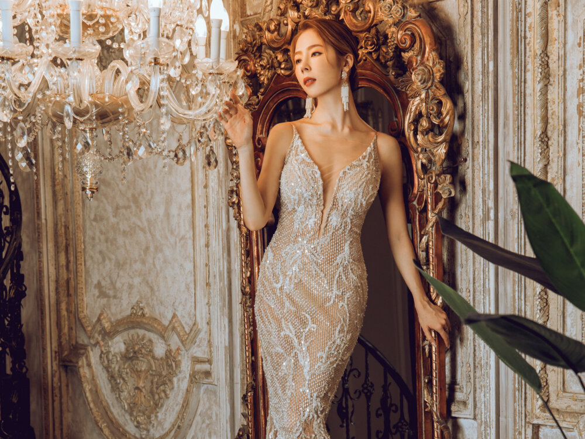
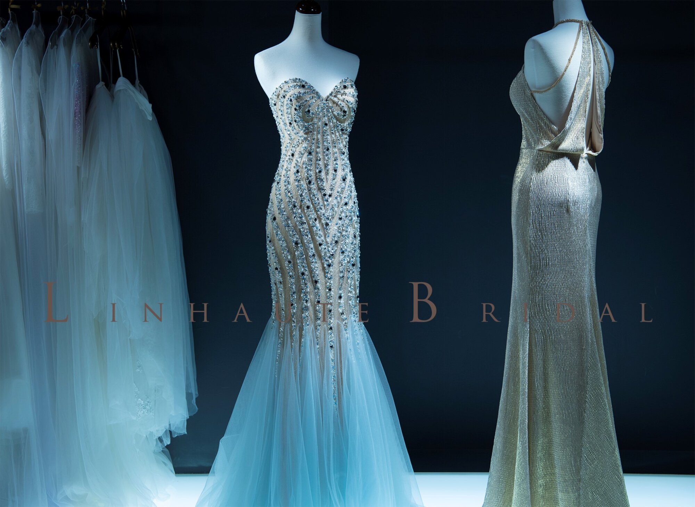
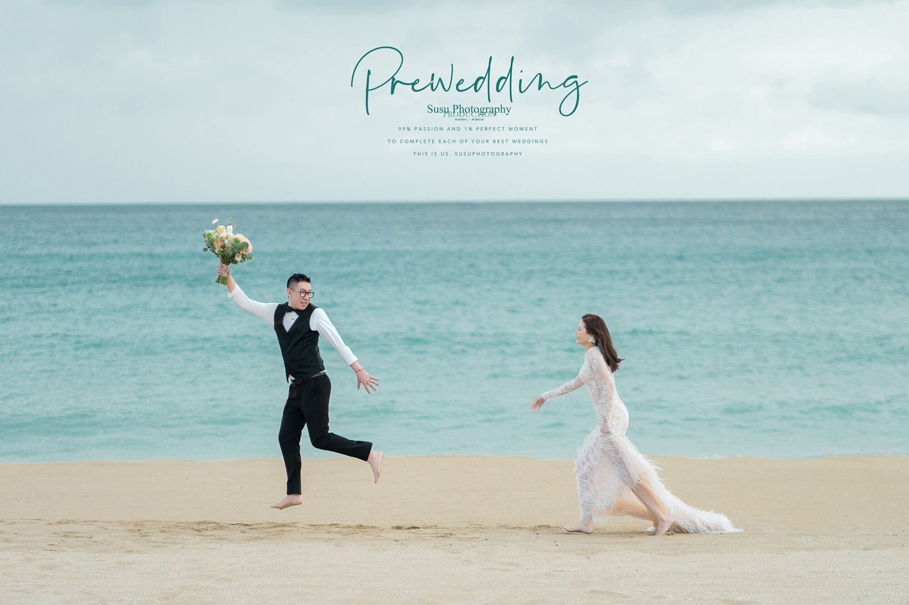
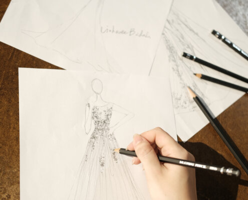
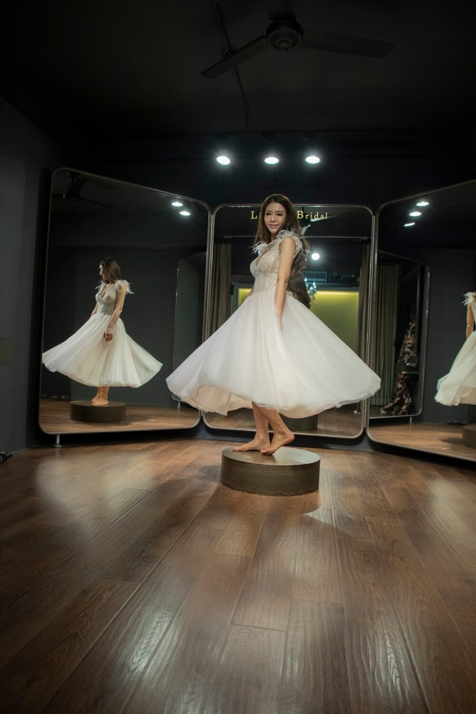
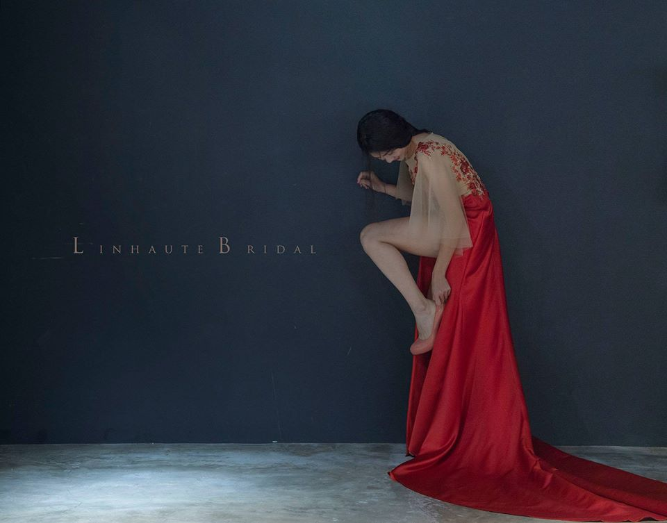

主分類一
高雄設計婚禮禮服推薦｜聚會場合不可少的晚禮服
晚禮服是晚上20點以後穿用的正式禮服，是女士禮服中最高檔 次、最具特色、充分展示個性的禮服樣式。又稱夜禮服、晚...

主分類二
禮服挑選不藏私技巧大公開│從認識禮服到 婚紗挑選一次完整解析
婚紗風格怎麼挑？看著身邊的朋友的婚紗照，總幻想著自己的 婚紗照該是什麼樣子。希望自己喜歡，又想要適合自己與另...

主分類一
高雄婚紗禮服推薦首選│禮服租借、婚紗照 拍攝、婚紗攝影師好評、婚紗展熱銷款式
高雄婚紗禮服推薦首選品牌！從專業婚顧服務、禮服租借、婚 紗照拍攝、攝影師拍攝最愛款式，想知道更多婚紗展熱銷經...

主分類二
手工禮服與婚宴場地的搭配訣竅｜教妳挑出 完美的宴客禮服婚紗
婚紗風格怎麼挑？看著身邊的朋友的婚紗照，總幻想著自己的 婚紗照該是什麼樣子。希望自己喜歡，又想要適合自己與另...

主分類三
高雄婚紗禮服推薦首選｜禮服租借技巧
結婚是說起來很甜蜜的事情，但開始籌備後，才知道事前準備 事項、功課清單越列越長，藏在細節裡的魔鬼多到不行！

主分類一
手工禮服是什麼？跟常見的婚紗禮服有什麼 不同嗎？教你選擇最適合妳的禮服！
每個人對婚紗的概念不一樣，我們尊重每一個人對婚紗的追求 不同於常見的婚紗禮服，一件手工訂製獨一無二的單款禮服...

主分類二
手工禮服是什麼？跟常見的婚紗禮服有什麼 不同嗎？教你選擇最適合妳的禮服！
婚紗風格怎麼挑？看著身邊的朋友的婚紗照，總幻想著自己的 婚紗照該是什麼樣子。希望自己喜歡，又想要適合自己與另...

主分類一
高雄絕美時裝小禮服推薦｜教你成為全場注 目焦點
在婚禮上，我們新娘並不是一定要一直穿著婚紗，除了婚紗， 新娘們當然也少不了各種各樣的小禮服了，小禮物穿起來簡...

主分類一
禮服款式介紹
每個人對婚紗的概念不一樣，我們尊重每一個人對婚紗的追求 不同於常見的婚紗禮服，一件手工訂製獨一無二的單款禮服...